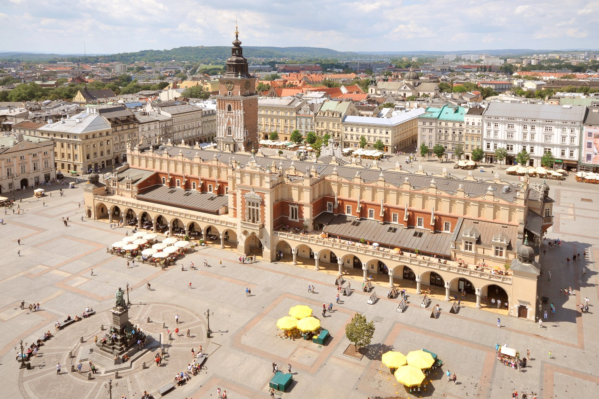

About me
Born in Krakow and raised amidst the scenic landscapes of Scotland, my journey has been one of exploration, creativity, and a deep-rooted connection with nature. Surrounded by the rich cultural heritage of Krakow and the breathtaking beauty of Scotland's highlands, I've always felt a sense of wonder and curiosity about the world around me. From an early age, I was captivated by the wonders of technology and the boundless possibilities of the digital realm. This fascination ignited a passion within me and propelled me towards a career in programming—a path where I could merge my love for technology with my innate creativity. My journey into the world of programming had humble beginnings. While working at various coffee shops to make ends meet, I dedicated every spare moment to honing my coding skills, immersing myself in the intricacies of programming languages and algorithms. What began as a hobby soon evolved into a full-fledged passion as I discovered the thrill of problem-solving and the sheer joy of bringing ideas to life through lines of code. Throughout my career, I've been fortunate to work on a diverse array of projects, each presenting its own unique challenges and opportunities for growth. From developing interactive websites that engage and inspire to crafting immersive gaming experiences that transport players to fantastical worlds, I've embraced the dynamic and ever-evolving nature of programming with open arms. However, amidst the exhilarating world of code, I've also found solace and inspiration in the simplicity of strumming chords on my guitar and the serenity of hiking through untamed wilderness. Playing the guitar allows me to express myself in ways that words cannot, while hiking rejuvenates my spirit and fuels my creativity, providing me with a fresh perspective on life and work. But perhaps my greatest joy comes from the process of creating games—a realm where I can seamlessly blend my technical expertise with my passion for storytelling and creativity. There's something uniquely rewarding about seeing players immerse themselves in worlds that I've helped to create, sparking their imagination and evoking emotions that transcend the digital realm. In my free time, you'll often find me embarking on new coding projects, eagerly exploring the latest technologies, or simply enjoying a cup of coffee while brainstorming ideas for my next venture. I thrive on the thrill of discovery and the endless possibilities that the world of programming has to offer, and I invite you to join me on this journey of exploration and innovation as we unlock the limitless potential of technology together.
